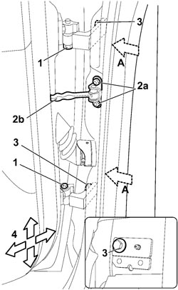
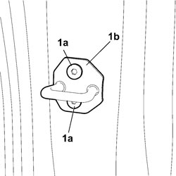
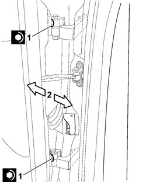
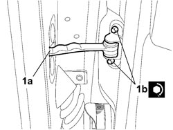

7010A14 REAR SIDE DOOR - ADJUST CENTERING AND MOULDING - INCLUDES ADAPTATION OF HINGES AND SEALS ON DOOR COMPARTMENT
- Path
- Procedures > 70 FITTINGS > 7010 PASSENGER COMPARTMENT REAR SIDE DOORS > 7010A REAR SIDE DOOR ASSEMBLY > 7010A14 REAR SIDE DOOR - ADJUST CENTERING AND MOULDING - INCLUDES ADAPTATION OF HINGES AND SEALS ON DOOR COMPARTMENT
- Kind
- repair procedure (removal / refitting; the operation number is the code)
- Applies to
- all engines; all production periods
- Interactive page
- https://sloeber94.github.io/elrnDB-fCrm/en/#/194000894
Applies to: all engines; all production periods
- Carry out the operations described below to adjust the door in a vertical and lengthwise direction.
Op. 7040L44 REAR DOOR RUNNING BOARD (ONE), LEFT OR RIGHT - R.R.
Op. 7040H36 CENTRE PILLAR LOWER ELEMENT (ONE), LEFT OR RIGHT - R.R
1. If the adjustment is carried out after having removed the door, tighten the hinge bolts to the recommended torque.
Component | Fastening | dia | Value (daNm) | Validity |
|---|---|---|---|---|
FRONT AND REAR DOOR MOVING HINGES | Bolt | M6 | 1,2÷ 1,8 |
2. Undo the bolts (2a) fixing the check strap (2b) and make sure it is in the correct position when the door is closed again.
3. Loosen the bolts fixing the hinges to the bodyshell on both the outside and the inside (detail A).
4. Adjust the position of the door, in the directions shown by the arrows using the slotted openings in the bolts so that it is perfectly aligned with the bodywork.

Applies to: all engines; all production periods
- When the adjustment is completed, tighten the door hinge bolts, bodyshell side, to torque.
Component | Fastening | dia | Value (daNm) | Validity |
|---|---|---|---|---|
REAR DOOR UPPER HINGES ON HINGE ATTACHMENT REINFORCEMENT (BODYSHELL) | Bolt | M8 | 2,88 ÷ 3,52 |
Component | Fastening | dia | Value (daNm) | Validity |
|---|---|---|---|---|
REAR DOOR LOWER HINGES ON HINGE ATTACHMENT REINFORCEMENT (BODYSHELL) | Bolt | M8 | 2,88 ÷ 3,52 |
- Carry out the operations described below for the transverse adjustment of the door in relation to the door housing seal.
1. Loosen the bolts (1a) fixing the door striker (1b).

Applies to: all engines; all production periods
1. Loosen the bolts, door side, fixing the door hinges.
2. Adjust the position of the door, in the directions shown by the arrows using the slotted openings in the bolts so that it is perfectly aligned with the bodywork.

Applies to: all engines; all production periods
- When the adjustment is completed, tighten the door hinge bolts, door side, to torque.
Component | Fastening | dia | Value (daNm) | Validity |
|---|---|---|---|---|
UPPER HINGES ON REAR DOOR ASSEMBLY | Bolt | M8 | 2,88 ÷ 3,52 |
Component | Fastening | dia | Value (daNm) | Validity |
|---|---|---|---|---|
FRONT AND REAR DOOR STRIKER WITH OUTER PANEL AND INTERMEDIATE PILLAR REINFORCEMENT | Bolt | M8 | 2,88 ÷ 3,52 |
- Adjust the door striker and tighten the fixing bolts to torque.
Component | Fastening | dia | Value (daNm) | Validity |
|---|---|---|---|---|
FRONT AND REAR DOOR STRIKER WITH OUTER PANEL AND INTERMEDIATE PILLAR REINFORCEMENT | Bolt | M8 | 2,88 ÷ 3,52 |
1. Take out the door check strap (1a) and tighten the fixing bolts (1b) to the recommended torque.
Component | Fastening | dia | Value (daNm) | Validity |
|---|---|---|---|---|
FRONT AND REAR DOOR STRIKER WITH OUTER PANEL AND INTERMEDIATE PILLAR REINFORCEMENT | Bolt | M8 | 2,88 ÷ 3,52 |

Applies to: all engines; all production periods
Op. 7040H36 CENTRE PILLAR LOWER ELEMENT (ONE), LEFT OR RIGHT - R.R
Op. 7040L44 REAR DOOR RUNNING BOARD (ONE), LEFT OR RIGHT - R.R.
Topics linked from this page (2)
- 7040H36 CENTRE PILLAR LOWER ELEMENT (ONE), LEFT OR RIGHT - R.R
- 7040L44 REAR DOOR RUNNING BOARD (ONE), LEFT OR RIGHT - R.R.